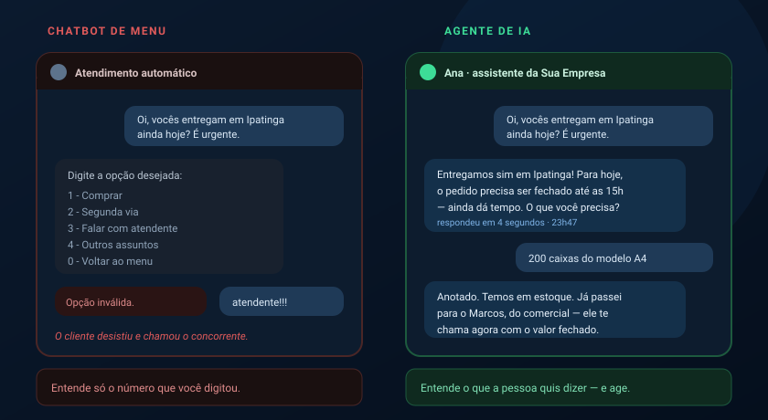
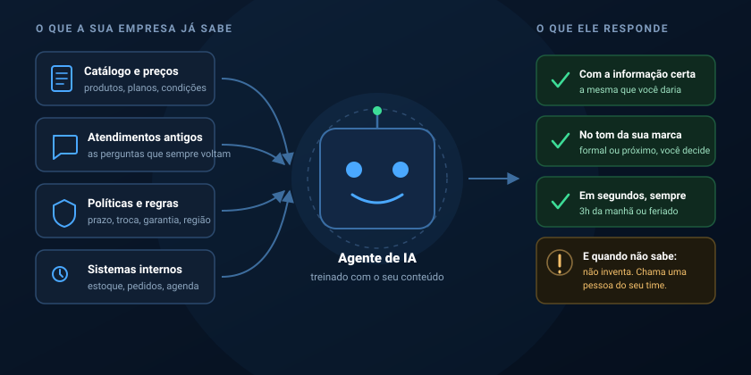
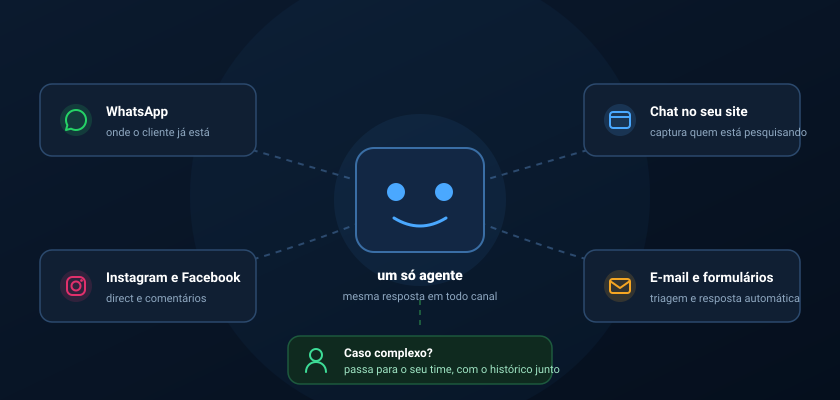

Seu cliente perguntou às 23h47. Quem respondeu?
A mensagem chega fora do expediente, no domingo, no meio da reunião. Se ninguém responde nos primeiros minutos, o interesse esfria e a pessoa manda a mesma pergunta para o concorrente. Um agente de IA treinado com o conhecimento da sua empresa responde na hora — com a informação certa, no seu tom — e só envolve uma pessoa do time quando realmente precisa.
23h47
Lead não espera. Ele testa três empresas e fica com quem respondeu primeiro.
O interesse de quem manda uma mensagem tem prazo de validade curtíssimo. Quem responde enquanto a pessoa ainda está pensando no assunto entra na conversa; quem responde no dia seguinte entra numa negociação que já começou sem ele.
O expediente acabou
Boa parte das mensagens chega justamente quando o cliente saiu do trabalho dele — à noite, no fim de semana, no feriado. É o horário em que a sua empresa está menos disponível e o interesse está mais alto.
A resposta que chega tarde
"Bom dia, vi sua mensagem de ontem." Nesse intervalo a pessoa já perguntou em outros dois lugares, já recebeu preço e já formou opinião. Você virou a terceira opção de uma decisão quase tomada.
O agente já respondeu
Ele cumprimenta, entende o pedido, informa prazo e condição, colhe os dados que o seu time precisa e agenda. Quando alguém abrir o celular pela manhã, o lead está qualificado e esperando — não perdido.
Isso não é o robô de "digite 1" que todo mundo odeia.
O chatbot tradicional é uma árvore de opções: se a pessoa não escrever exatamente o que ele espera, ele trava. Um agente de IA entende a pergunta escrita do jeito que o cliente escreveu — com erro de digitação, gíria, áudio transcrito, duas perguntas na mesma frase — e responde a partir do que a sua empresa realmente sabe.

Treinado com o conhecimento da sua empresa — não com achismo da internet.
O agente não sai respondendo por conta própria. Nós o alimentamos com o que você já tem: catálogo, tabela de preços, políticas de prazo e garantia, região atendida e o histórico dos atendimentos que o seu time faz todo dia.
O resultado é um assistente que responde como a sua melhor atendente responderia — inclusive no tom, que você define: mais formal ou mais próximo, com ou sem emoji, chamando o cliente de "você" ou de "senhor".

Muito além de responder "qual o horário de funcionamento".
O agente executa tarefas de verdade, integrado aos sistemas que a sua empresa já usa.
Responde as dúvidas de sempre
Preço, prazo, forma de pagamento, região atendida, como funciona a garantia. As mesmas perguntas que consomem metade do dia do seu time, resolvidas em segundos.
Qualifica o lead
Descobre o que a pessoa precisa, para quando, em que quantidade e onde. O contato chega ao seu vendedor pronto para negociar, e não como um "oi" sem contexto.
Agenda e confirma
Consulta a agenda, oferece horários livres, marca e envia lembrete. Reduz o buraco de agenda causado por quem esqueceu que tinha horário marcado.
Consulta pedido e status
Integrado ao seu sistema, informa onde está o pedido, a nota fiscal, o código de rastreio ou a segunda via do boleto — sem ocupar ninguém do seu time.
Passa para um humano na hora certa
Negociação delicada, reclamação séria ou pedido fora do padrão: o agente identifica, transfere para a pessoa certa e entrega o histórico inteiro da conversa junto.
Mostra o que o cliente pergunta
Todo atendimento vira dado: o que mais perguntam, onde desistem, qual produto some da conversa. Informação que melhora o seu site, o seu anúncio e a sua oferta.
No canal que o seu cliente já usa — sem obrigá-lo a mudar de aplicativo.
Um único agente, com o mesmo conhecimento e o mesmo tom, atendendo em todas as portas de entrada da sua empresa ao mesmo tempo. Cem conversas simultâneas custam o mesmo que uma.

O que o agente não faz — e por que isso é uma boa notícia.
A maior preocupação de quem contrata IA é legítima: "e se ele inventar uma resposta e prometer o que eu não posso cumprir?". Por isso configuramos limites claros desde o primeiro dia.
- Não inventa resposta. Quando a pergunta sai do que ele conhece, ele diz que vai verificar e chama uma pessoa do seu time.
- Não fecha o que você não autorizou. Desconto, exceção de prazo e condição especial ficam reservados para uma decisão humana.
- Não substitui o seu time. Ele tira da frente o trabalho repetitivo para que as pessoas cuidem do que exige julgamento e relação.
- Não esconde que é um assistente. Ele se apresenta como tal. Fingir ser humano destrói a confiança no momento em que o cliente percebe.
- Não some com o histórico. Toda conversa fica registrada e disponível para o seu time revisar e auditar.
- Não trata dado de qualquer jeito. Configuração alinhada à LGPD, com acesso controlado às informações dos seus clientes.
Modelos de ponta, integrados aos sistemas que você já tem.
Trabalhamos com os principais modelos de linguagem do mercado combinados a uma base de conhecimento própria da sua empresa, o que mantém as respostas ancoradas na sua realidade. Toda a integração — WhatsApp oficial, redes sociais, ERP, agenda — é construída pela nossa equipe de engenharia.
Os mesmos princípios de engenharia que aplicamos em sistemas sob medida valem aqui: integração testada, monitoramento ativo e histórico auditável. Veja como trabalhamos em aplicações web personalizadas →
Do primeiro papo ao agente atendendo, em quatro etapas.
Mapeamento
Levantamos as perguntas que mais chegam, as respostas corretas e onde começa o território do seu time.
Treinamento
Montamos a base de conhecimento com o seu material e ajustamos o tom de voz da marca.
Testes com você
Você conversa com o agente antes de qualquer cliente. Corrigimos respostas até ficar do seu jeito.
No ar e evoluindo
Publicamos nos canais, acompanhamos as conversas reais e refinamos o que o agente ainda erra.
Quantas mensagens a sua empresa deixou sem resposta esta semana?
Provavelmente mais do que você imagina — e nenhuma delas aparece em relatório nenhum. Conte para a gente como funciona o seu atendimento hoje e quais perguntas mais se repetem. A partir disso mostramos o que um agente de IA resolveria já no primeiro mês, o que fica com o seu time e quanto custa colocar isso no ar.